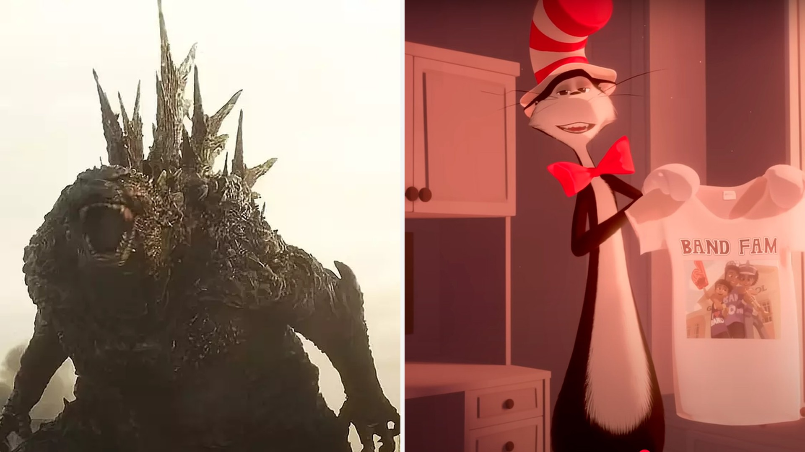

2026年11月巴西院线上映的电影，按周一次看清
从《Godzilla Minus Zero》到《饥饿游戏》，还有《速度与激情》重映：本月的上映日历，帮你挑选想看的那场。

11月的新片各有各的看点：第一周有巨型怪兽，还有一部动作经典重映，再次回到 Panem，月底则是一部讲述拥有魔法能力的少年少女的冒险片。下面的清单依据 Ingresso.com 11月3日更新的日历整理，针对的是巴西影院，其他国家和地区的上映日期可能不同。请注意，这些日期是预计时间，可能有变动，尤其是小体量的影片。
11月5日这一周
最大的名字是《Godzilla Minus Zero》，也就是那部拿下奥斯卡最佳视觉效果的日本电影的续作。据 Ingresso.com 介绍，故事发生在前作事件的两年之后，主角仍是敷岛；据 Critical Hits 报道，官方预告片确认了基多拉（Ghidorah）是反派。同周上映的还有 O Gatola da Cartola、Os Farofeiros 3、Night of the Reaper，以及改编灵感来自石黑一雄小说的 Klara and the Sun。据 O Vício 报道，该片在巴西由 Sato Company 发行。

除了怪兽，这一周还有不少风格迥异的片子。Feito Pipa 讲的是一个11岁的足球迷，为了不用去和父亲生活，瞒着家人奶奶病情恶化的事。Cavalo Selvagem Nove 把中情局特工送上复活节岛，时间正好在1973年智利政变前夕。Assalto à Brasileira 里，一名失业的记者帮劫匪与警方谈判，换取独家报道。Os Farofeiros 3 则让一家人去参加一场婚礼，地点是加勒比海上的一座虚构岛屿，酒店却和 Alexandre 承诺的不一样。以上剧情简介均来自 Ingresso.com。
11月12日这一周
这是本月最热闹的一周，名单上有大约二十部影片。其中有为纪念第一部上映25周年而重映的 Velozes & Furiosos（《速度与激情》在巴西的片名）、Ebenezer e os Fantasmas do Natal、Como Roubar um Banco、Pinóquio: Maldição de Madeira，以及讲一只猫穿越欧洲的 Miss Moxy。喜欢巴西电影和纪录片的观众，还可以看 Quatro Meninas、Boiúna: Terror no Amazonas 和 As Benzedeiras。片名按巴西上映时的名称列出。

片子太多，不妨按心情来选。适合全家一起看的有 Super Charlie：一个10岁男孩发现自己的婴儿弟弟真有超能力；前面提到的 Miss Moxy 也在此列。想看悬疑的，可以选 Lago dos Ossos（两对订了同一间小木屋的情侣被卷入危险的游戏），或是在亚马孙唤醒远古生物的 Boiúna。剧情片方面，Quatro Meninas 的背景是1885年，讲四个逃离奴隶制的黑人女孩；纪录片 As Benzedeiras 则记录了巴西各地的五位民间疗愈师。

11月19日这一周
焦点是《The Hunger Games: Sunrise on the Reaping》，11月18日有点映场。同一天上映的还有 Ramayana: O Nascimento de uma Lenda、Detetives de 4 Patas 和讲述西尔维斯特·史泰龙坚持亲自出演洛奇·巴波亚的 Eu Sou o Rocky。如果你要去看《饥饿游戏》，记得留出时间：片长158分钟。据 Ingresso.com 报道，该片在巴西由 Paris Filmes 发行，18日的点映也是由它宣布的。

除了本月的重头戏，19日还有 Verão da Lata：故事从1987年巴西海滩上冲来的一批大麻罐头，以及警察之间的合作说起；还有重映的 Malês，讲述两名被奴役的穆斯林青年卷入1835年 Malês 起义（Revolta dos Malês）的故事。给小朋友的是 Detetives de 4 Patas，一只狗在20世纪初的莫斯科寻找一件被盗的珠宝。
11月26日这一周
本月以 Enfeitiçadas: Bem-vindos a Hexe（拥有魔法能力的少年少女的冒险）、Leviticus: Ritual de Sangue、讲述伊丽莎白·霍姆斯的 Tudo Pode Ser Visto，以及故事发生在戈亚斯州的 Fogaréu 收尾。
/extras/conteudos/enfeiticadas-hexed-trailer.webp)
月底的巴西本土影片里，Fogaréu 讲一名女子带着养母的骨灰回到戈亚斯州的乡下，威胁到她叔叔的连任。Yellow Cake 讲一位核科学家参与一项秘密实验，用巴拉伊巴州出产的铀来消灭埃及伊蚊。纪录片 Kopenawa: Sonhar a Terra-Floresta 则呈现了亚诺玛米族领袖 Davi Kopenawa 的思想，以及他们土地面临的威胁。
大银幕上的演唱会与直播
影院里也有音乐和舞台演出。由 Paul Dugdale 执导的 Rammstein – Live in Mexico City 于11月4日上映，收录了在墨西哥 Foro Sol 体育场的三场演出。11月5日是 George Michael: The Faith Tour，用修复过的35毫米胶片画面呈现他1988年的巴黎演唱会。11月6日是 Gustavo Mioto em Inconfundível Tour，11月7日是 Stray Kids 东京巨蛋演唱会的直播。11月26日，安德鲁·劳埃德·韦伯在伦敦拍摄的音乐剧 Starlight Express 为这份片单收尾。以上均据 Ingresso.com。

那12月呢？
最大的新片是12月17日的《Avengers: Doomsday》。Legião dos Heróis 在同一天还列出了《Dune: Part Three》，但没有说明是哪个国家的日期，所以请向你的影院确认。
怎样避免看错场次
请在离你最近的影院排片里核对日期，因为小体量的影片常会改期，有些只在部分影厅上映。配音版还是字幕版，可以在场次时间页面里查到。
本文原以葡萄牙语写成，由编辑部针对中文读者改写。 葡萄牙语原文